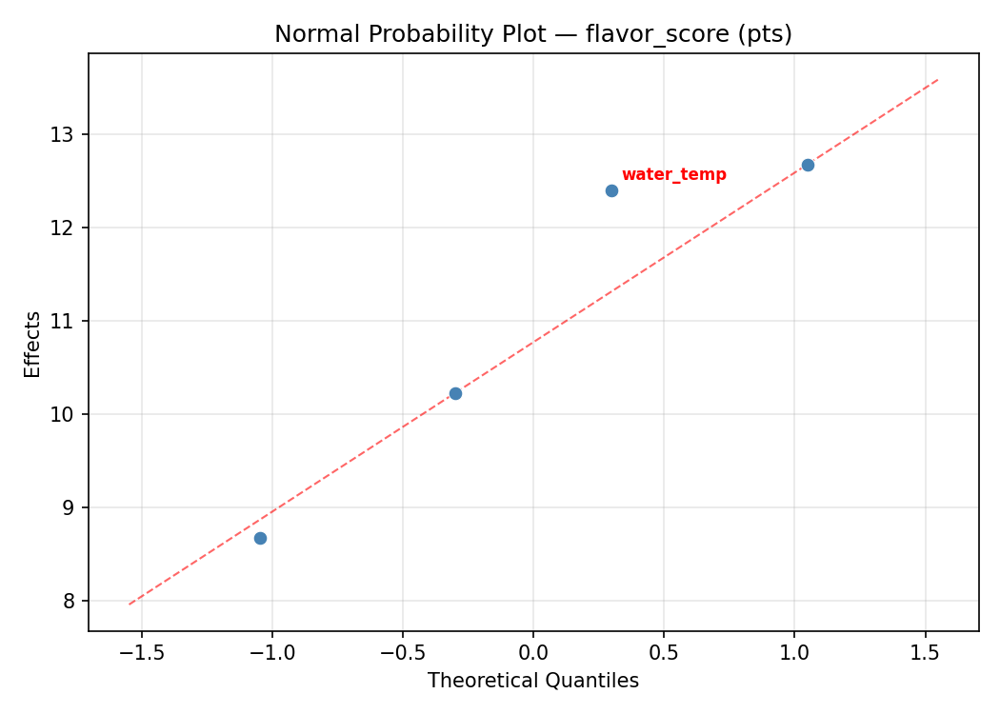
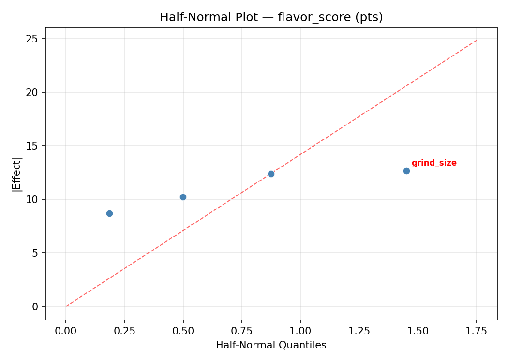
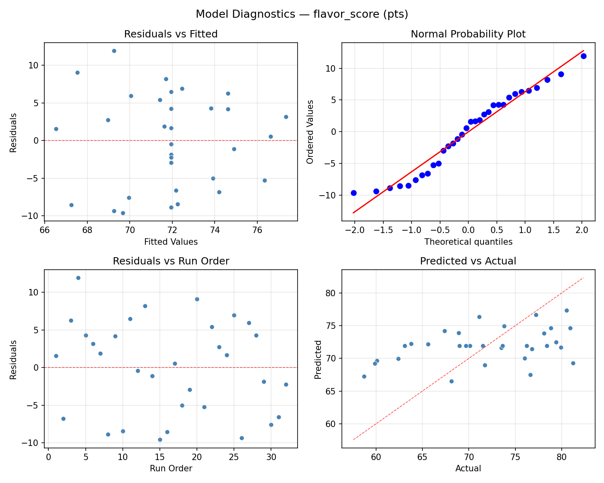
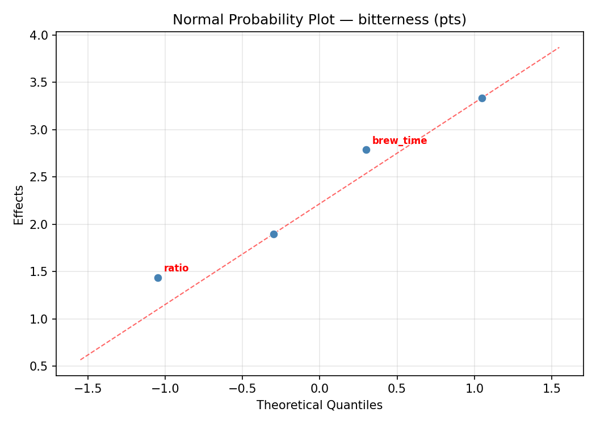
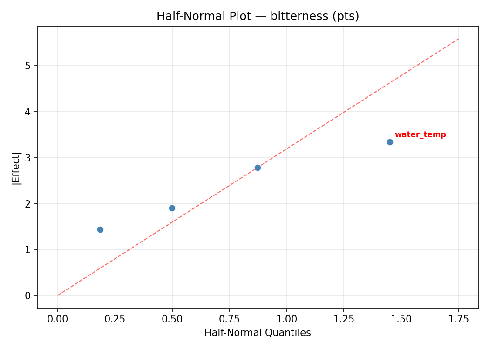
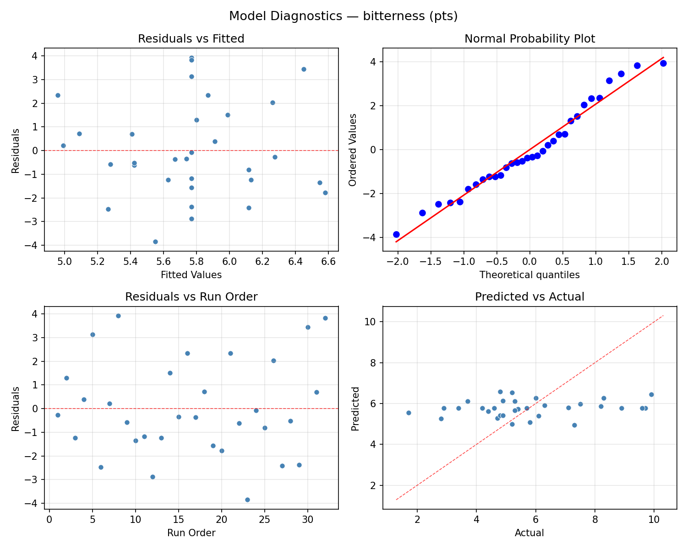

Summary
This experiment investigates coffee brewing extraction. Central composite design to maximize flavor score and minimize bitterness by tuning grind size, water temperature, brew time, and coffee-to-water ratio.
The design varies 4 factors: grind size (um), ranging from 200 to 800, water temp (C), ranging from 85 to 96, brew time (sec), ranging from 180 to 300, and ratio (g/g), ranging from 14 to 18. The goal is to optimize 2 responses: flavor score (pts) (maximize) and bitterness (pts) (minimize). Fixed conditions held constant across all runs include roast level = medium, water tds = 120.
A Central Composite Design (CCD) was selected to fit a full quadratic response surface model, including curvature and interaction effects. With 4 factors this produces 32 runs including center points and axial (star) points that extend beyond the factorial range.
Quadratic response surface models were fitted to capture potential curvature and factor interactions. The RSM contour plots below visualize how pairs of factors jointly affect each response.
Key Findings
For flavor score, the most influential factors were brew time (33.8%), grind size (29.6%), ratio (25.2%). The best observed value was 81.2 (at grind size = 800, water temp = 96, brew time = 300).
For bitterness, the most influential factors were water temp (41.8%), grind size (33.3%), brew time (16.1%). The best observed value was 1.7 (at grind size = 200, water temp = 96, brew time = 180).
Recommended Next Steps
- Run confirmation experiments at the predicted optimal settings to validate the model.
- Consider whether any fixed factors should be varied in a future study.
Experimental Setup
Factors
| Factor | Low | High | Unit |
|---|
grind_size | 200 | 800 | um |
water_temp | 85 | 96 | C |
brew_time | 180 | 300 | sec |
ratio | 14 | 18 | g/g |
Fixed: roast_level = medium, water_tds = 120
Responses
| Response | Direction | Unit |
|---|
flavor_score | ↑ maximize | pts |
bitterness | ↓ minimize | pts |
Configuration
{
"metadata": {
"name": "Coffee Brewing Extraction",
"description": "Central composite design to maximize flavor score and minimize bitterness by tuning grind size, water temperature, brew time, and coffee-to-water ratio"
},
"factors": [
{
"name": "grind_size",
"levels": [
"200",
"800"
],
"type": "continuous",
"unit": "um"
},
{
"name": "water_temp",
"levels": [
"85",
"96"
],
"type": "continuous",
"unit": "C"
},
{
"name": "brew_time",
"levels": [
"180",
"300"
],
"type": "continuous",
"unit": "sec"
},
{
"name": "ratio",
"levels": [
"14",
"18"
],
"type": "continuous",
"unit": "g/g"
}
],
"fixed_factors": {
"roast_level": "medium",
"water_tds": "120"
},
"responses": [
{
"name": "flavor_score",
"optimize": "maximize",
"unit": "pts"
},
{
"name": "bitterness",
"optimize": "minimize",
"unit": "pts"
}
],
"settings": {
"operation": "central_composite",
"test_script": "use_cases/88_coffee_brewing/sim.sh"
}
}
Experimental Matrix
The Central Composite Design produces 32 runs. Each row is one experiment with specific factor settings.
| Run | grind_size | water_temp | brew_time | ratio |
|---|
| 1 | 500 | 90.5 | 240 | 11.6182 |
| 2 | 200 | 96 | 180 | 18 |
| 3 | 800 | 85 | 300 | 14 |
| 4 | 800 | 96 | 300 | 18 |
| 5 | 500 | 90.5 | 371.453 | 16 |
| 6 | 800 | 85 | 300 | 18 |
| 7 | 500 | 78.4501 | 240 | 16 |
| 8 | 200 | 96 | 300 | 14 |
| 9 | 500 | 90.5 | 240 | 16 |
| 10 | 800 | 96 | 180 | 14 |
| 11 | 500 | 90.5 | 240 | 16 |
| 12 | 800 | 85 | 180 | 18 |
| 13 | 500 | 90.5 | 240 | 16 |
| 14 | 800 | 96 | 300 | 14 |
| 15 | 500 | 90.5 | 108.547 | 16 |
| 16 | -157.267 | 90.5 | 240 | 16 |
| 17 | 500 | 90.5 | 240 | 16 |
| 18 | 200 | 85 | 180 | 18 |
| 19 | 800 | 96 | 180 | 18 |
| 20 | 500 | 90.5 | 240 | 16 |
| 21 | 200 | 85 | 300 | 14 |
| 22 | 500 | 90.5 | 240 | 16 |
| 23 | 1157.27 | 90.5 | 240 | 16 |
| 24 | 200 | 85 | 300 | 18 |
| 25 | 500 | 90.5 | 240 | 16 |
| 26 | 200 | 96 | 180 | 14 |
| 27 | 500 | 90.5 | 240 | 20.3818 |
| 28 | 500 | 90.5 | 240 | 16 |
| 29 | 800 | 85 | 180 | 14 |
| 30 | 500 | 102.55 | 240 | 16 |
| 31 | 200 | 85 | 180 | 14 |
| 32 | 200 | 96 | 300 | 18 |
Step-by-Step Workflow
1
Preview the design
$ python doe.py info --config use_cases/88_coffee_brewing/config.json
2
Generate the runner script
$ python doe.py generate --config use_cases/88_coffee_brewing/config.json \
--output use_cases/88_coffee_brewing/results/run.sh --seed 42
3
Execute the experiments
$ bash use_cases/88_coffee_brewing/results/run.sh
4
Analyze results
$ python doe.py analyze --config use_cases/88_coffee_brewing/config.json
5
Get optimization recommendations
$ python doe.py optimize --config use_cases/88_coffee_brewing/config.json
6
Multi-objective optimization
With 2 competing responses, use --multi to find the best compromise via Derringer–Suich desirability.
$ python doe.py optimize --config use_cases/88_coffee_brewing/config.json --multi
7
Generate the HTML report
$ python doe.py report --config use_cases/88_coffee_brewing/config.json \
--output use_cases/88_coffee_brewing/results/report.html
Features Exercised
| Feature | Value |
|---|
| Design type | central_composite |
| Factor types | continuous (all 4) |
| Arg style | double-dash |
| Responses | 2 (flavor_score ↑, bitterness ↓) |
| Total runs | 32 |
Analysis Results
Generated from actual experiment runs using the DOE Helper Tool.
Response: flavor_score
Top factors: brew_time (33.8%), grind_size (29.6%), ratio (25.2%).
ANOVA
| Source | DF | SS | MS | F | p-value |
|---|
| Source | DF | SS | MS | F | p-value |
| grind_size | 4 | 129.7225 | 32.4306 | 0.488 | 0.7447 |
| water_temp | 4 | 15.6089 | 3.9022 | 0.059 | 0.9929 |
| brew_time | 4 | 95.0389 | 23.7597 | 0.357 | 0.8350 |
| ratio | 4 | 79.0139 | 19.7535 | 0.297 | 0.8753 |
| Lack | of | Fit | 8 | 615.1707 | 76.8963 |
| Pure | Error | 7 | 465.4400 | | |
| Error | 15 | 1080.6107 | 66.4914 | | |
| Total | 31 | 1399.9950 | 45.1611 | | |
Pareto Chart

Main Effects Plot

Normal Probability Plot of Effects

Half-Normal Plot of Effects

Model Diagnostics

Response: bitterness
Top factors: water_temp (41.8%), grind_size (33.3%), brew_time (16.1%).
ANOVA
| Source | DF | SS | MS | F | p-value |
|---|
| Source | DF | SS | MS | F | p-value |
| grind_size | 4 | 24.1841 | 6.0460 | 1.676 | 0.2078 |
| water_temp | 4 | 16.1452 | 4.0363 | 1.119 | 0.3844 |
| brew_time | 4 | 4.3641 | 1.0910 | 0.302 | 0.8718 |
| ratio | 4 | 0.9620 | 0.2405 | 0.067 | 0.9910 |
| Lack | of | Fit | 8 | 60.9146 | 7.6143 |
| Pure | Error | 7 | 25.2587 | | |
| Error | 15 | 86.1734 | 3.6084 | | |
| Total | 31 | 131.8287 | 4.2525 | | |
Pareto Chart

Main Effects Plot

Normal Probability Plot of Effects

Half-Normal Plot of Effects

Model Diagnostics

Response Surface Plots
3D surfaces fitted with quadratic RSM. Red dots are observed data points.
bitterness brew time vs ratio

bitterness grind size vs brew time

bitterness grind size vs ratio

bitterness grind size vs water temp

bitterness water temp vs brew time

bitterness water temp vs ratio

flavor score brew time vs ratio

flavor score grind size vs brew time

flavor score grind size vs ratio

flavor score grind size vs water temp

flavor score water temp vs brew time

flavor score water temp vs ratio

Multi-Objective Optimization
When responses compete, Derringer–Suich desirability finds the best compromise.
Each response is scaled to a 0–1 desirability, then combined via a weighted geometric mean.
Overall Desirability
D = 0.8876
Per-Response Desirability
| Response | Weight | Desirability | Predicted | Dir |
|---|
flavor_score |
1.5 |
|
80.50 0.9263 80.50 pts |
↑ |
bitterness |
1.0 |
|
2.80 0.8326 2.80 pts |
↓ |
Recommended Settings
| Factor | Value |
|---|
grind_size | 500 um |
water_temp | 90.5 C |
brew_time | 240 sec |
ratio | 16 g/g |
Source: from observed run #6
Trade-off Summary
Sacrifice = how much worse than single-objective best.
| Response | Predicted | Best Observed | Sacrifice |
|---|
bitterness | 2.80 | 1.70 | +1.10 |
Top 3 Runs by Desirability
| Run | D | Factor Settings |
|---|
| #3 | 0.8149 | grind_size=200, water_temp=96, brew_time=300, ratio=18 |
| #13 | 0.7662 | grind_size=800, water_temp=85, brew_time=180, ratio=14 |
Model Quality
| Response | R² | Type |
|---|
bitterness | 0.1331 | linear |
Full Multi-Objective Output
============================================================
MULTI-OBJECTIVE OPTIMIZATION
Method: Derringer-Suich Desirability Function
============================================================
Overall desirability: D = 0.8876
Response Weight Desirability Predicted Direction
---------------------------------------------------------------------
flavor_score 1.5 0.9263 80.50 pts ↑
bitterness 1.0 0.8326 2.80 pts ↓
Recommended settings:
grind_size = 500 um
water_temp = 90.5 C
brew_time = 240 sec
ratio = 16 g/g
(from observed run #6)
Trade-off summary:
flavor_score: 80.50 (best observed: 81.20, sacrifice: +0.70)
bitterness: 2.80 (best observed: 1.70, sacrifice: +1.10)
Model quality:
flavor_score: R² = 0.1923 (linear)
bitterness: R² = 0.1331 (linear)
Top 3 observed runs by overall desirability:
1. Run #6 (D=0.8876): grind_size=500, water_temp=90.5, brew_time=240, ratio=16
2. Run #3 (D=0.8149): grind_size=200, water_temp=96, brew_time=300, ratio=18
3. Run #13 (D=0.7662): grind_size=800, water_temp=85, brew_time=180, ratio=14
Full Analysis Output
=== Main Effects: flavor_score ===
Factor Effect Std Error % Contribution
--------------------------------------------------------------
brew_time 10.0875 1.1880 33.8%
grind_size 8.8125 1.1880 29.6%
ratio 7.5214 1.1880 25.2%
water_temp 3.4000 1.1880 11.4%
=== ANOVA Table: flavor_score ===
Source DF SS MS F p-value
-----------------------------------------------------------------------------
grind_size 4 129.7225 32.4306 0.488 0.7447
water_temp 4 15.6089 3.9022 0.059 0.9929
brew_time 4 95.0389 23.7597 0.357 0.8350
ratio 4 79.0139 19.7535 0.297 0.8753
Lack of Fit 8 615.1707 76.8963 1.156 0.4305
Pure Error 7 465.4400 66.4914
Error 15 1080.6107 66.4914
Total 31 1399.9950 45.1611
=== Summary Statistics: flavor_score ===
grind_size:
Level N Mean Std Min Max
------------------------------------------------------------
-157.267 1 79.9000 0.0000 79.9000 79.9000
1157.27 1 79.4000 0.0000 79.4000 79.4000
200 8 71.0875 6.6872 62.4000 76.8000
500 14 71.3500 6.8817 59.9000 81.2000
800 8 71.8875 6.9856 58.7000 80.5000
water_temp:
Level N Mean Std Min Max
------------------------------------------------------------
102.55 1 73.5000 0.0000 73.5000 73.5000
78.4501 1 70.1000 0.0000 70.1000 70.1000
85 8 71.8875 6.2513 62.4000 78.4000
90.5 14 72.4714 7.4924 59.9000 81.2000
96 8 71.0875 7.3782 58.7000 80.5000
brew_time:
Level N Mean Std Min Max
------------------------------------------------------------
108.547 1 81.2000 0.0000 81.2000 81.2000
180 8 71.1125 7.3761 58.7000 78.4000
240 14 71.6714 7.0712 59.9000 80.9000
300 8 71.8625 6.2573 63.1000 80.5000
371.453 1 73.6000 0.0000 73.6000 73.6000
ratio:
Level N Mean Std Min Max
------------------------------------------------------------
11.6182 1 68.9000 0.0000 68.9000 68.9000
14 8 72.1375 7.6584 58.7000 80.5000
16 14 73.1214 7.1820 59.9000 81.2000
18 8 70.8375 5.8537 63.1000 78.4000
20.3818 1 65.6000 0.0000 65.6000 65.6000
=== Main Effects: bitterness ===
Factor Effect Std Error % Contribution
--------------------------------------------------------------
water_temp 2.9500 0.3645 41.8%
grind_size 2.3500 0.3645 33.3%
brew_time 1.1375 0.3645 16.1%
ratio 0.6125 0.3645 8.7%
=== ANOVA Table: bitterness ===
Source DF SS MS F p-value
-----------------------------------------------------------------------------
grind_size 4 24.1841 6.0460 1.676 0.2078
water_temp 4 16.1452 4.0363 1.119 0.3844
brew_time 4 4.3641 1.0910 0.302 0.8718
ratio 4 0.9620 0.2405 0.067 0.9910
Lack of Fit 8 60.9146 7.6143 2.110 0.1705
Pure Error 7 25.2587 3.6084
Error 15 86.1734 3.6084
Total 31 131.8287 4.2525
=== Summary Statistics: bitterness ===
grind_size:
Level N Mean Std Min Max
------------------------------------------------------------
-157.267 1 4.9000 0.0000 4.9000 4.9000
1157.27 1 5.3000 0.0000 5.3000 5.3000
200 8 6.8125 2.4810 3.7000 9.9000
500 14 6.0143 1.6314 3.4000 9.6000
800 8 4.4625 2.0688 1.7000 8.2000
water_temp:
Level N Mean Std Min Max
------------------------------------------------------------
102.55 1 5.2000 0.0000 5.2000 5.2000
78.4501 1 3.4000 0.0000 3.4000 3.4000
85 8 4.9250 2.3150 1.7000 9.9000
90.5 14 6.1286 1.4850 4.4000 9.6000
96 8 6.3500 2.6592 2.8000 9.7000
brew_time:
Level N Mean Std Min Max
------------------------------------------------------------
108.547 1 6.3000 0.0000 6.3000 6.3000
180 8 6.1125 2.7174 1.7000 9.9000
240 14 5.8857 1.6626 3.4000 9.6000
300 8 5.1625 2.3856 2.8000 9.7000
371.453 1 5.7000 0.0000 5.7000 5.7000
ratio:
Level N Mean Std Min Max
------------------------------------------------------------
11.6182 1 5.8000 0.0000 5.8000 5.8000
14 8 5.4875 2.8322 1.7000 9.9000
16 14 5.8929 1.6662 3.4000 9.6000
18 8 5.7875 2.3491 2.9000 9.7000
20.3818 1 6.1000 0.0000 6.1000 6.1000
Optimization Recommendations
=== Optimization: flavor_score ===
Direction: maximize
Best observed run: #4
grind_size = 800
water_temp = 96
brew_time = 300
ratio = 18
Value: 81.2
RSM Model (linear, R² = 0.0471, Adj R² = -0.0941):
Coefficients:
intercept +71.9375
grind_size -0.9366
water_temp +0.4473
brew_time +1.2124
ratio -0.1655
RSM Model (quadratic, R² = 0.2566, Adj R² = -0.3556):
Coefficients:
intercept +70.4034
grind_size -0.9366
water_temp +0.4473
brew_time +1.2124
ratio -0.1655
grind_size*water_temp -0.5188
grind_size*brew_time +0.2563
grind_size*ratio -0.7687
water_temp*brew_time -0.7188
water_temp*ratio +1.9812
brew_time*ratio -0.4687
grind_size^2 +1.2164
water_temp^2 +1.0289
brew_time^2 +0.8831
ratio^2 -1.2107
Curvature analysis:
grind_size coef=+1.2164 convex (has a minimum)
ratio coef=-1.2107 concave (has a maximum)
water_temp coef=+1.0289 convex (has a minimum)
brew_time coef=+0.8831 convex (has a minimum)
Notable interactions:
water_temp*ratio coef=+1.9812 (synergistic)
grind_size*ratio coef=-0.7687 (antagonistic)
water_temp*brew_time coef=-0.7188 (antagonistic)
grind_size*water_temp coef=-0.5188 (antagonistic)
brew_time*ratio coef=-0.4687 (antagonistic)
Predicted optimum (from linear model, at observed points):
grind_size = 200
water_temp = 96
brew_time = 300
ratio = 14
Predicted value: 74.6992
Surface optimum (via L-BFGS-B, linear model):
grind_size = 200
water_temp = 96
brew_time = 300
ratio = 14
Predicted value: 74.6992
Model quality: Weak fit — consider adding center points or using a different design.
Factor importance:
1. ratio (effect: 11.4, contribution: 27.9%)
2. brew_time (effect: 10.6, contribution: 25.8%)
3. water_temp (effect: 9.7, contribution: 23.6%)
4. grind_size (effect: 9.3, contribution: 22.8%)
=== Optimization: bitterness ===
Direction: minimize
Best observed run: #23
grind_size = 200
water_temp = 96
brew_time = 180
ratio = 14
Value: 1.7
RSM Model (linear, R² = 0.0875, Adj R² = -0.0476):
Coefficients:
intercept +5.7688
grind_size +0.1594
water_temp -0.2268
brew_time -0.1702
ratio +0.5874
RSM Model (quadratic, R² = 0.3132, Adj R² = -0.2525):
Coefficients:
intercept +5.2756
grind_size +0.1594
water_temp -0.2268
brew_time -0.1702
ratio +0.5874
grind_size*water_temp +0.3562
grind_size*brew_time -0.3187
grind_size*ratio -0.9187
water_temp*brew_time +0.3187
water_temp*ratio +0.2437
brew_time*ratio +0.2188
grind_size^2 +0.1046
water_temp^2 +0.0734
brew_time^2 -0.0308
ratio^2 +0.4692
Curvature analysis:
ratio coef=+0.4692 convex (has a minimum)
grind_size coef=+0.1046 convex (has a minimum)
water_temp coef=+0.0734 negligible curvature
brew_time coef=-0.0308 negligible curvature
Notable interactions:
grind_size*ratio coef=-0.9187 (antagonistic)
grind_size*water_temp coef=+0.3562 (synergistic)
water_temp*brew_time coef=+0.3187 (synergistic)
grind_size*brew_time coef=-0.3187 (antagonistic)
Predicted optimum (from linear model, at observed points):
grind_size = 500
water_temp = 90.5
brew_time = 240
ratio = 20.3818
Predicted value: 7.0556
Surface optimum (via L-BFGS-B, linear model):
grind_size = 200
water_temp = 96
brew_time = 300
ratio = 14
Predicted value: 4.6250
Model quality: Weak fit — consider adding center points or using a different design.
Factor importance:
1. ratio (effect: 7.0, contribution: 43.5%)
2. brew_time (effect: 3.8, contribution: 23.8%)
3. water_temp (effect: 3.0, contribution: 18.7%)
4. grind_size (effect: 2.2, contribution: 13.9%)